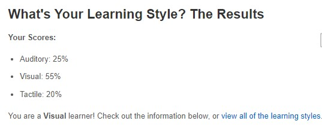
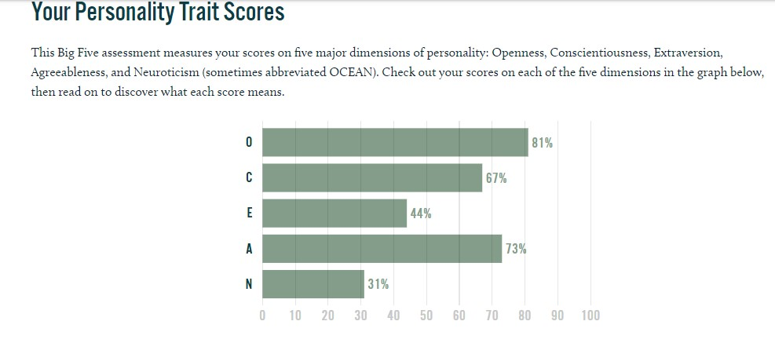

My name is Adam (s3947515) and my student email is s3947515@student.rmit.edu.au. I was born in England in 2003 in the Whitechapel hospital. I lived in England for about 2 years before I moved to Australia to live with my mom’s side of the family and moved to a town in North East Victoria making me a dual citizen British-Australian. I went to St. Joseph’s primary school throughout my primary school days and was a part of the ICT group the school ran for grade 6. During primary school I also did Taekwondo. For my secondary school I went to F.C.J College and during my time there I learnt French for half a year in both year 7 & 8 while I learnt Japanese in the other halves of the year. When I was able to make my subject selection, I picked and learnt Japanese, Business where I received a certificate ||| after completion, maths, physics and chemistry. My favourite subject was Japanese as I enjoy different languages and cultures and it was fun for me learning the language. During high school I also did Badminton and played it once a week and enjoyed it. I own a pet bird called Georgie which is a black capped conure and is around about 3 years old. During my time with her I taught her how to whistle and she also has learnt to say goodnight.
I am interested in programming as well as security in IT as programming is something which can create so many different things and security is something that is constantly evolving. I got interested in IT when I first used a computer at primary school and I started to learn more as time went on. I played different games and did many different things and wanted to learn how to do it myself and how all of it worked and functioned. I started helping others when they had IT problems and continued to gain experience over the years with different problems. IT is something used in everyday life and it’s something that I want to continue learning about. I don’t have much background experience in programming or security but I wish to learn more during my time at RMIT.
I chose going to RMIT as it is known as a technology school with a background in teaching IT at a high level. It is also a university in central Melbourne and I can travel to it within a reasonable amount of time. I also heard from others that have been to RMIT in the past that it was a good university to go to. It is also a university with a good reputation worldwide and that made me pick wanting to go to RMIT.
I want to learn how to program mainly as well as being able to build things from it. I also wish to learn more about building computer, internet and more and what goes into making them, how they work and how to solve problems with them. I also want to learn to work more as a team, with some of my assignments being based around it, as it is something important that is needed in all IT jobs.
This position is most appealing to me as it is something which requires using multinational equipment as well as talks with stakeholders which I would enjoy talking about business side of things. It also involves security of systems which I enjoy learning about and being able to come up with plans in case things go wrong. This job is also known to be one where you travel around and is one of the main reasons I picked it. This job requires experience and qualifications in jobs similar to this as well as previous experience in planning and executing Disaster Recovery Exercises and system integrations and standard technical processes that are involved in recovery of information systems. Currently I have no experience in this and I would like to try to achieve this through my university and through working outside of university in roles similar than this and learning from seniors in this role. This job also requires understanding in the application of project methodology to planning, executing and documenting results of a disaster recovery exercises, which I currently don’t have any knowledge about, but plan to learn by having a job that teaches you this and to learn from the others around me about it. This job also requires knowledge of subject matter and technical processes, which I currently don’t have any knowledge on but plan on from university and from future jobs I might have. The job also requires being able to meet specific timelines, quality service as well as good communication, which I currently am practising and will keep practising over my time in university. The final requirement is responding time to issue which I currently have no experience in but plan to gain experience in when I get a similar job in this field and learn from others.
www.16personalities.com>www.16personalities.com>www.16personalities.com
http://www.educationplanner.org/students/self-assessments/learning-styles.shtml
https://www.truity.com/test/big-five-personality-test
It shows that I am an open person and very neutral on topics which is things that I agree on. These tests to me show me my qualities that I have and shows me who I am and what I am good at as well as what I might not be good at. These might make me self aware and change my behaviour of when I am in a group and change the way I act depending on the situation that occurs and who my group members. I think I should take this into account by looking at the people around me and putting myself in a group with people I will get along with and ones with slightly differing results from mine that will help in balancing out the group and help in making everything run smoothly.
Overview: My project idea is to make an application about fruit and vegetables. This application will function to do multiple things such as having market values, which will help the user see the value of the product and be able to make decisions and to buy the produce or if it might cost too much and they can find it at a better price elsewhere. The seasonality of the fruit/vegetable to know when the fruit/vegetable is in season and when you might be able to obtain some easily and at a cheaper price. Information about the origin of fruit/vegetable, how people like the fruit/vegetable and ways that it is used in cooking and some cooking recipes for it. How to grow the fruit/vegetable in their own homes and how to keep it alive and well and producing the said fruit/vegetable for them to eat from their own garden.
Motivation: The reason I am making this app is due to the recent increase in the cost of living in Australia. The increase in the cost of living has resulted in households spending more money on fruit and vegetables and needing a way to save more money on produce that they buy. I am also making this app because there is currently no app like it on the market and I believe that this app being created will be able to reach out and help many people whether they want to save money, grow plants or learn information and will be widely used by a wide variety of people.
Description: Market- This app will have a regularly updated feature similar to what you see on the stock market using the information of multiple available prices from around each state to see the current average price of the produce and to see if what you are currently planning to buy is at a decent value or if you can save money and get a better deal elsewhere at a more reasonable price. It will also show you how much the produce is going up or down in average price and can say when the price might begin to fall or increase in price.
Information- On this app it will have history on the produce which will tell the user where it originated from and as well as its scientific name and further information on the produces relation to other produce as well as a user rating for the produce so that other users can see if others like the produce or they don’t like it. They will also he able to see common ways that the produce is cooked in such as recipes and can give the user inspiration if they might have too much of a certain produce and want to get rid of some of it through cooking it up into a dish.
Growing/Seasonality- This section of the app will help in users that wish to know the seasonality of produce so that they may know when it is in season as well as being able to know how to grow this produce. It will give set instructions to follow as to how to grow it, where to grow it and when to grow it and how to check on its growth with pictures for users. This will help in letting the user be able to grow this produce on their own and can give the user a sense of achievement that they can grow their own produce on their own.
Tools and Technologies: This application will need a big database to store all the information on it and need to be fast and reliable for the user. This application will also be needing a lot of programming which will be done using python. It will need phones to beta test for bugs during the beta phase so that it can all work and once all the code is finished and the design is completed can be launched successful. It will also need to be approved by the Commonwealth so that it is not breaking any laws in the collection of data to make the market values from the values of fruit and vegetables in supermarkets and markets and will be done in compliance with the rules set out by Australian law.
Skills Required: This application will require people with both knowledge of how to use and maintain a database as well as having people to write the code for the application. This application will also need people to work on the design of the application so that it looks good and that it is easy to use for the users that will be using the application. This application will also need the presence of a lawyer so that a legal document can be sent to the Australian Commonwealth so that they can approve the use of collecting data on prices from supermarkets and markets making sure it isn’t illegal.
Outcome: If this application is successful it will be one that everyone will be able to use and will be an application that can be used by all ages whether you are young or old. This application will help in households spending too much money by helping to cut down the spending amount on fruit and vegetables and will also give users a database of information all in one place so that they don’t have to waste time researching for information online when they can find it all in one place on this application. This will impact marketing for fruit and vegetables and will force supermarkets and markets to sell fruit and vegetables at a better price and will see more people going outside growing produce which will help people to enjoy gardening and teach them about what they are eating so that they know how to remain health.